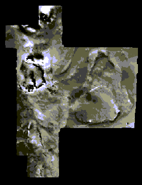
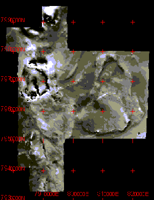
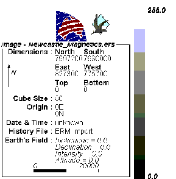
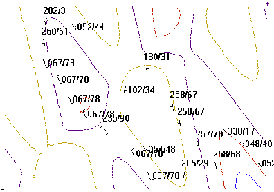
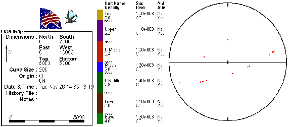

Tutorial 11: Legends and grids
Exercise 11-Legends & Grids
In this exercise we will load in an image in ER Mapper Format and view the legend & grid facilities.
1) In order to display an image created in another file format, such as Geosoft or ER Mapper it is first of all a good idea to set the Geophysics Image Scaling Factor to 1, in the Geophysics Display Options window. This ensures that the image will be displayed at a resolution of one pixel per data point, and keeps down memory requirements.
2) Now load in the Newcastle Magnetics test image (provided by ER Mapper) by selecting Display Image ->ER Mapper from the Geophysics menu, and you should see this image:

3) This image was stored as an 8 bit binary image so the absolute values have been lost, however IEEE4byte data can be loaded which preserves this information. These images are now normal geophysical images, so the look up table may be altered by right-clicking in the image, which brings up the Geophysics Plot Options window. In this window click on the Grid Overlay check box, and notice that the Auto box is checked as well. Now click on OK and a geographically correct grid is overlaid over the image:

If the grid points overlap the reference coordinates, or are too closely or widely spaced, going back into the Geophysics Plot Options window and turning off Auto grids allows the starting position and the x & y spacing of the grid to be manually defined.
4) Now we can look at the legend associated with this image, by selecting Legend from the Windows menu, which will bring up a window looking something like this:

This window displays a set of information relating to the front-most window within Noddy. In this case it includes information such as the file name, the dimensions of the grid, the cell size, a spatial scale bar (that re-sizes with the scale of the geophysics image window) and a look up table showing the extreme values for the image.
5) Now create a simple test history (e.g. base stratigraphy->fold->tilt-> shear zone) and create a map of the geology, and measure the bedding at a number of localities:

6) Now look at the Legend window, which this time shows the stratigraphic column information (including rock properties) together with a stereographic projection of the orientation data.

Noddy · open source under the MIT licence · Loop3D/noddy_qt